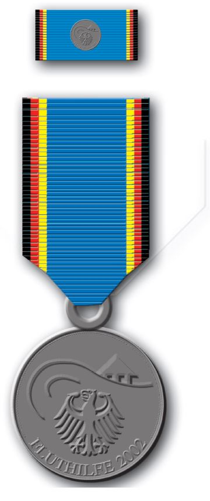

FluthilfeMedErl
Ausfertigungsdatum: 20.09.2002
Vollzitat:
"Gemeinsamer Erlass des Bundesministers des Innern und des Bundesministers der Verteidigung über die Stiftung der Einsatzmedaille "Fluthilfe 2002" vom 20. September 2002 (BGBl. I S. 3749)"
(+++ Textnachweis ab: 1.10.2002 +++)
(+++ Anlage zum Erlass v. 22.9.2002 I 3748 (OrdenErl 8) +++)
Im Namen der Bundesrepublik Deutschland verleihe ich | |||||
| Emil Mustermann | |||||
| als Dank und in Anerkennung für besonders aufopferungsvolle | |||||
| Hilfe bei der Abwehr von Gefahren und der Beseitigung von | |||||
| Schäden anlässlich der Flutkatastrophe im | |||||
| August 2002 | |||||
| die | |||||
| Einsatzmedaille "Fluthilfe 2002". | |||||
| Berlin, den | |||||
| Bundesminister des Innern/der Verteidigung | |||||
| Prägesiegel (Bundesadler) | Faksimile (Unterschrift) | ||||
|  | |||||